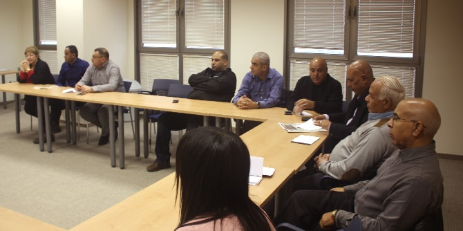

In late January, the Mandel Center for Leadership in the Negev hosted an intensive study day for supervisors of education in the Arab sector, which was led by faculty members Dr. Smadar Ben-Asher and Kassim Alsraiha. Attended by 16 supervisors, the study day began with a reading and discussion of the Arabic text “Between Spirit and Reality.” Led by Kassim Alsraiha, this session explored a text that examines the formation of individual and group consciousness among the Arab population of the Middle East from both a historical and philosophical perspective, and is highly relevant for today's cultural and personal world.
Following the discussion of the text, Professor Riad Agbaria of the Faculty of Health Sciences of Ben-Gurion University of the Negev gave a lecture titled “Kulthoumyat: Mind and Romance,” which presented brain research and discussed the extent to which the brain is influenced by different social interactions.
The supervisors also heard a lecture from Dr. Rachel Har Zion, an educational advisor and pedagogical mentor at the Hagar Arab-Jewish bilingual school in Beer Sheva, who spoke about the Hagar Association's bilingual anthology project, which seeks to nurture social pluralism. Following the lecture, the supervisors received a copy of the Hebrew-Arabic anthology, as a gift from this special project.
The subjects covered at the study day evoked lively discussion among the supervisors. The participants conveyed their excitement and appreciation for the event, and asked for more unique meetings on Arabic humanities and culture in the future. They also expressed their hope that the rich and varied content presented at the study day will be shared with all supervisors in Israel's Ministry of Education, not just those from the Arab sector.

{kind=link}